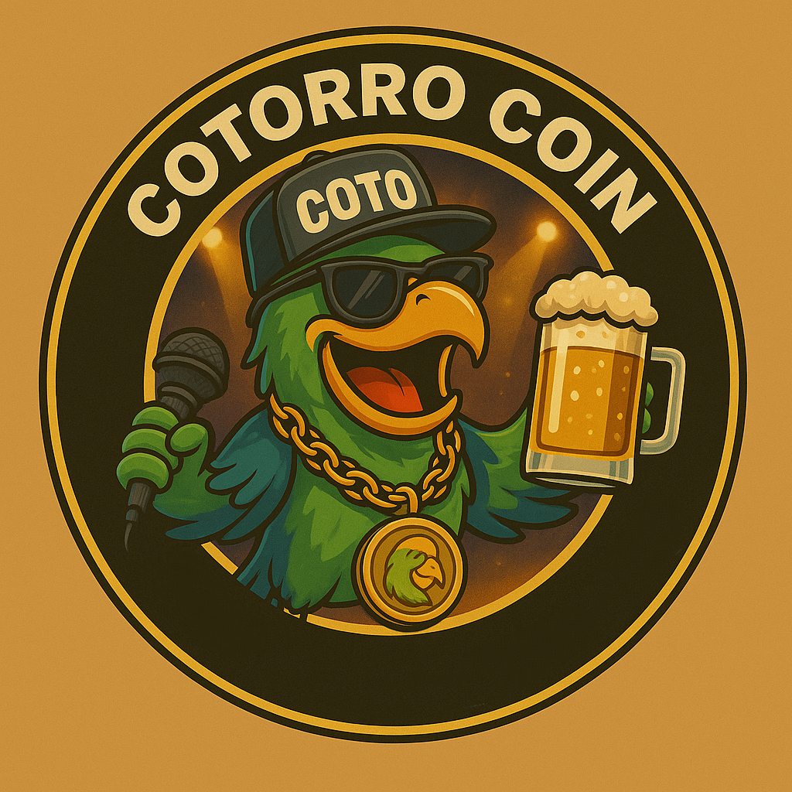

¿Qué es $COTO?
La moneda del desmadre. CotorroCoin nace para joder al sistema financiero mientras te echas un episodio. Si el mercado llora, nosotros reímos… y cobramos.
Tokenomics
La moneda del pueblo cotorro 🦜
Roadmap del desmadre
- 🎙️ Etapa 1: “Episodio piloto” – Lanzamiento
- 🍻 Etapa 2: “Caguamas y holders” – Marketing viral
- 🎤 Etapa 3: “Invitados de lujo” – Colabs con podcasters
- 🛫 Etapa final: “¿Y si nos vamos a Dubai?” – To the moon